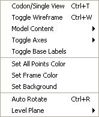
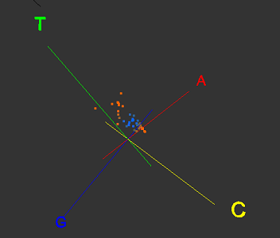
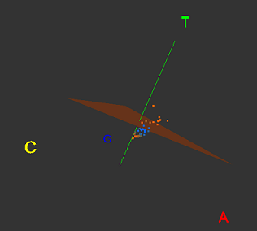
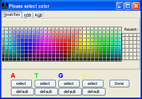
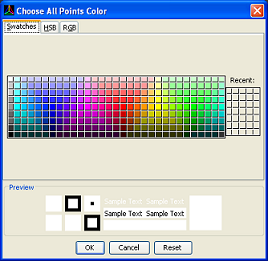

The view menu provides a range of functionalities to manipulate the visualization.
Codon/Single View Toggle between the codon view or the single view. A codon view allows three tetrahedron to be displayed next to each other on the screen. The single view displays only one tetrahedron. Codon view is only active on whole sequence mode.

Toggle Wireframe
Show or hide the wire frame for the tetrahedron
Model Content Model content can be selected. Available model content includes:
Toggle Axes Display or hide the axes. The visibility of the axes can be controlled collectively or individually.

Toggle Base Labels
Display or hide the labels (the letters A,T,G,C at each vertex of the tetrahedron)
Set All Points Color Assign one colour to all the points inside the tetrahedron. A separate colour-choosing window will pop-up.

Set Frame Color
Assign the colour of the frame. The colour of the frame (ie the edge of tetrahedron) as well as the colour of the labels corresponding to those edges will be changed.

Set Background
Assign the colour for the background
Auto Rotate Start up the automatic rotation of tetrahedron. The direction and the speed of rotation can be dynamically adjusted by mouse dragging the tetrahedron. For example, dragging the tetrahedron to the right slowly will result in slow rotation of the tetrahedron to the right.
Level Plane In order to aid visualizing depth in 3D, a level plane can be displayed. A level plane is the triangular plane opposite each vertex. The location of the level plane can be controlled by keyboard action.